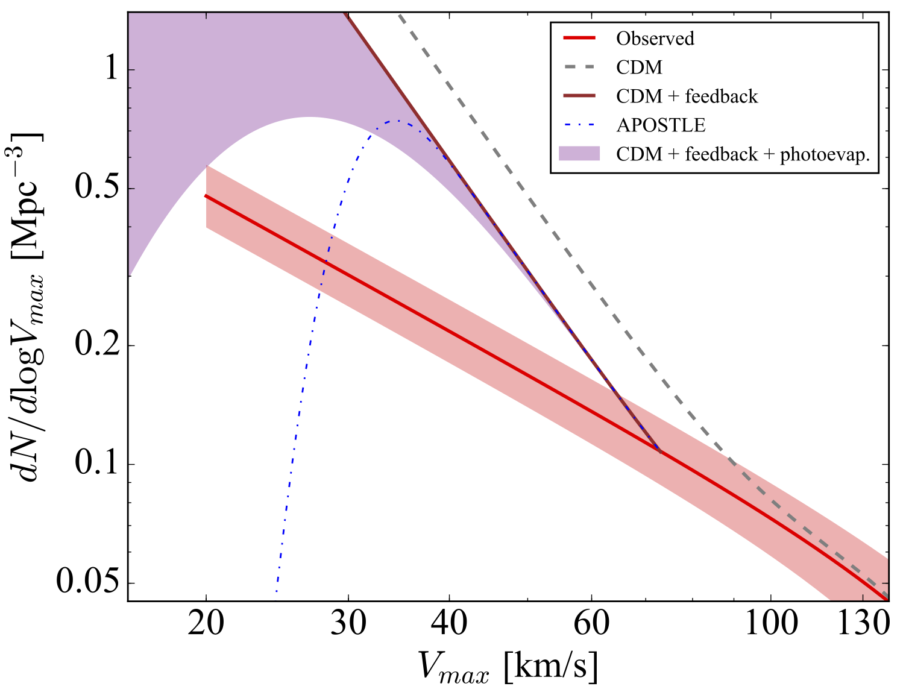

Sebastian
Trujillo-Gomez, Ph.D.

 0000-0003-2482-0049
0000-0003-2482-0049www.researchgate.net/profile/Sebastian-Trujillo-Gomez
Contact
strujill@gmail.com
Astronomisches Rechen-Institut
Mönchhofstr. 12-14
69120 Heidelberg, Germany
About me
I am an astrophysicist and computational scientist currently working as a postdoctoral researcher at the Zentrum für Astronomie at Heidelberg University. My research centers on linking baryons (ordinary matter) and dark matter in the context of galaxy formation to understand both how galaxies form, and how to exploit them as probes of cosmology and the particle nature of dark matter. My long-term goal is to develop models of tracer populations (including stars, star clusters, and neutral hydrogen) to reconstruct the formation and assembly of galaxies and their host dark matter haloes using the next-generation surveys and the latest advances in machine intelligence.
As a member of the Galaxy Evolution research group, I investigate how galaxies shape the properties of their star cluster populations, and how the most massive and ancient clusters (known as globular clusters) can be used to learn about the assembly of galaxies and their dark matter haloes. I am involved in the E-MOSAICS project, which has produced the first hydrodynamical simulation to follow the formation and evolution of star clusters and their host galaxies to the present day in a representative cosmological volume constaining thousands of galaxies. I am also working on the next generation of simulations of galaxies and their star clusters using improved physical models for star and cluster formation, and stellar feedback as part of the EMP (Empirically Motivated Physics) team.
Reconstructing the assembly of galaxies using star clusters
I dedicate a significant fraction of my research to learning about the latest advances in machine learning, and applying them to the most challenging problems in cosmology and galaxy formation. I have developed interpretable deep learning models to reconstruct the assembly histories of galaxies in large surveys from simple observables. The figure below shows the predictions of an artificial neural network classifier trained to infer the origin (in-situ vs. accreted) of globular clusters in large galaxy surveys (from Trujillo-Gomez et al. submitted). The model was trained using over 700 simulated galaxies from the E-MOSAICS project and their merger trees. The left panel shows the previously known origin of each of the Milky Way clusters, and the middle panel shows the predictions of the neural network when the system is observed in projection like an external galaxy. With only a few simple observables (positions, line-of-sight velocities, iron abundances), the network accurately predicts the origin of up to 90 percent of clusters with unambiguous labels. It also correctly identifies at least 80 percent of the clusters accreted from the Kraken and Gaia-Enceladus progenitors. This represents a successful first step on the road to reconstructing the assembly of observed galaxies using surveys.

Measuring the abundance of dark matter haloes to understand the nature of dark matter
I am currently investigating the use of deep learning, and in particular convolutional neural networks, to recover the halo mass function from neutral hydrogen surveys and use it to test cosmological predictions at the smallest scales. The image below shows a comparison of the best observational estimate of the dark matter halo mass function currently available (using the maximum circular velocity as a proxy) with the predictions of the concordance cosmological model, ΛCDM (figure from Trujillo-Gomez et al. 2018). After carefully accounting for the effects of radiation, stellar feedack, and systematics in the dynamical models, we found that low-mass haloes still appear to be underabundant compared to the predictions. This discrepancy could provide important hints on the elusive particle nature of dark matter, indicating that it may not be cold or collisionless (see Schneider, Trujillo-Gomez et al. 2017).

Research Interests
- The connection between dark and luminous matter
- Forward modelling approaches for complex systems: analytical models and numerical simulations of structure and galaxy formation
- The effect of galactic environment on the formation of stellar clusters
- Reconstructing the assembly of galaxies using the observable properties of their stars and GCs
- The origin of dark matter deficient and ultra-diffuse galaxies
- Gas kinematics of galaxies in volume-limited surveys as a probe of galaxy formation and the nature of dark matter
- The role of simulations in the interpretation of observations
Publications
For an updated list of my publications, please check my ADS record or my ORCID profile.
Seminars
Watch a talk I gave at the Instituto de Astrofísica de Canarias about using globular clusters to understand the formation of the Milky Way and ultra-diffuse galaxies that lack dark matter: 'Gas, stars, and globular clusters as tracers of galaxy formation and evolution'
Outreach
I believe communication is an integral part of the scientific enterprise and an essential tool for guiding progress in society.
Listen to my guest appearance in the podcast 'Desde el Observatorio' produced by the Astronomy department at Universidad de Antioquia (in Spanish).
Curriculum Vitae
Please contact me by email if you would like a copy of my CV.